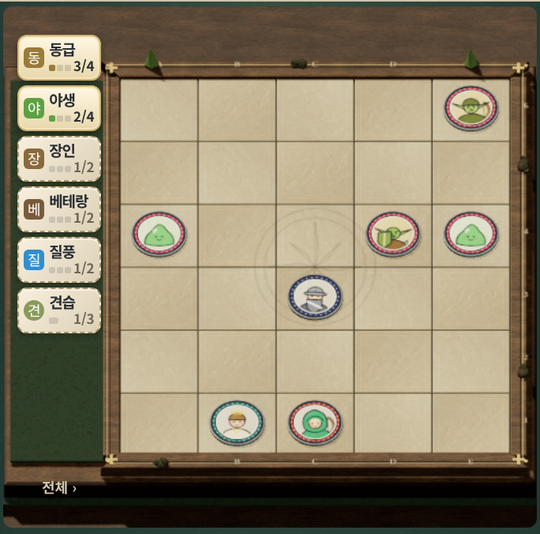
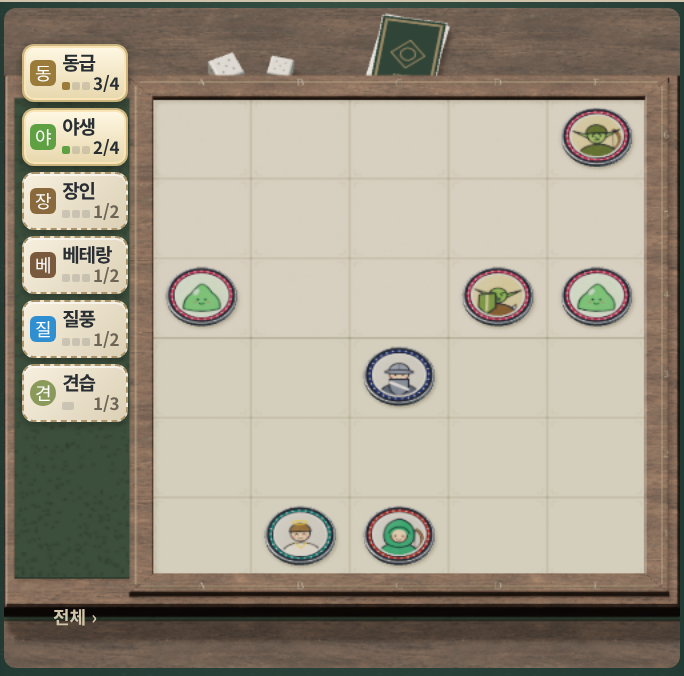
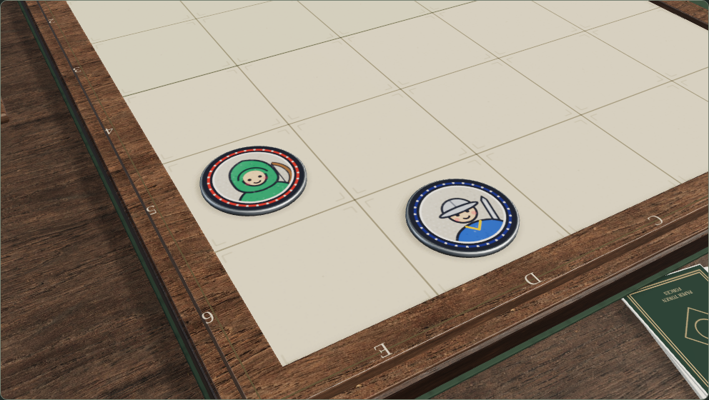

보드 재질 · 전후 비교
같은 시드로 전사·궁수·마법사를 구매한 실제 게임 화면입니다. 반복 석판과 작은 풍경 모형을 원목 프레임·무광 인쇄면·카드와 주사위로 바꿨습니다.
3D 확대 화면 조작게임 플레이이전 · 석판과 풍경 모형현재 · 인쇄 보드와 탁상 소품



같은 시드로 전사·궁수·마법사를 구매한 실제 게임 화면입니다. 반복 석판과 작은 풍경 모형을 원목 프레임·무광 인쇄면·카드와 주사위로 바꿨습니다.
3D 확대 화면 조작게임 플레이

